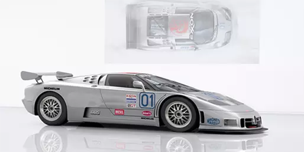

La Centodieci vient célébrer la continuité des 110 ans de succès de Bugatti marqué par un design et des performances exceptionnels, tout en rendant hommage à l’histoire récente de la marque. Avec la Centodieci (110 en italien), Bugatti a procédé à une réinterprétation de l’EB110 qui, à l’époque de sa sortie en 1991, était considérée comme la voiture hypersportive la plus rapide et la plus extraordinaire de son temps. L’EB110, construite par Romano Artioli en Italie, a représenté une étape intermédiaire importante dans la refondation de Bugatti en 1998 et son retour à ses racines françaises dans la ville de Molsheim.


Les concepteurs et les ingénieurs de Bugatti ont dû affronter plusieurs défis techniques lors de la conception de la Centodieci:
Transporter l’esthétique classique d’une voiture hypersportive de la fin des années 1980 dans le nouveau millénaire et respecter son esprit sans se limiter à le copier s’est avéré techniquement complexe. De plus, l’esthétique totalement différente se devait de respecter la parfaite harmonie entre l’aérodynamisme et les contraintes thermiques de cette voiture 16 cylindres, dorénavant dotée d’une puissance impressionnante de 1 600 chevaux.


Basée sur l'architecture de la Chiron, la Centodieci en reprend le W16-8L quadriturbo mais la puissance de celui-ci a été portée à 1.600ch, soit 100ch supplémentaires. Loin d'être un poids plume avec 1.975kg annoncés à vide, la dernière création de Molsheim a tout de même perdu 20kg par rapport à une Chiron et 2kg comparée à une Chiron Sport. Sur l'exercice du 0 à 100 km/h, Bugatti annonce toujours 2,4s. La vitesse de pointe est bridée à 380 km/h, comme sur une Divo qui reste plus légère de 15kg. La Centodieci fait aussi bien que cette dernière en terme d'accélération selon la firme alsacienne.